OLIVE Nightingale GUI
Installation and Startup
Getting started with the OLIVE Nightingale GUI is a pretty straightforward process. The only prerequisite for running the GUI, apart from a functional and running OLIVE server, is openJDK Java 11, that can be sourced here:
The GUI is configured to automatically detect and connect to an OLIVE server instance running on the same machine as the GUI, as long as the default server ports are still being used. It is possible to connect this GUI to an OLIVE server running on a remote machine, so long as firewall and other settings permit. For details on how to do this if it's needed, get in touch with us for assistance.
These instructions assume a typical OLIVE delivery layout as follows:
- olive5.1.0
- docs/
- oliveDocker or runtime-5.1.0*/olive-5.1.0*
- OliveGUI/ - The OLIVE Nightingale GUI (not included in all deliveries)
- bin/
- Nightingale
- bin/
- oliveAppData/
- plugins/
- workflows/
To launch the GUI, once you've installed the version of Java linked above, fire up the OLIVE server in your favorite manner, then you can launch the GUI by hopping into the appropriate directory, and starting the Nightingale launcher:
$ cd olive5.1.0/OliveGUI/bin
$ ./Nightingale
This should start up the GUI that should automatically connect to the running server. The GUI should be pointing to your 'workflows' directory by default, so it should already know about the SAD_LID_SID.workflow that's included - but if for some reason this isn't showing up, you can add it using the '+' symbol in the GUI's Workflows panel.
Nightingale GUI User Guide
Overview
Below is a basic diagram of Nightingale with all the major panels highlighted:
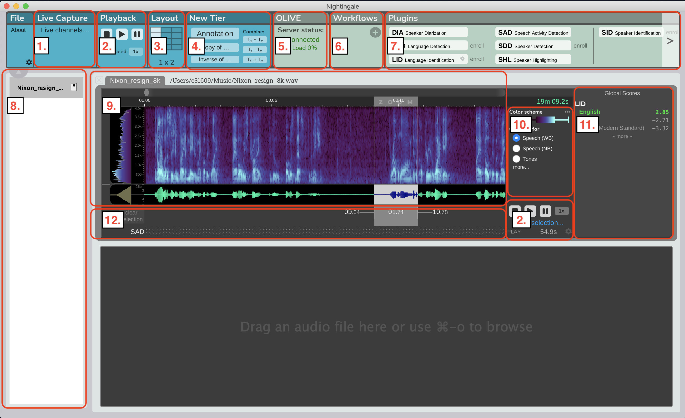
Panels:
- Live Stream
- Playback
- Layout
- New Tier
- Server Status
- Workflows
- Plugins
- Channel List
- Spectogram
- Spectogram Control
- Global Score Results
- Region Score Results
Enrollment
What's an Enrollment?
Enrollment is the process of adding a model to a plugin and is required for several types of plugins. In the case of Speaker Identification, and enrollment involves submitting a portion of audio that contains only the speaker that you want to look for in the future. The enrollment process turns this portion of audio into a model which the speaker identification plugin will use to score future audio against in order to detect additional instances of the speaker you enrolled.
How to Enroll
Enrollment in the Nightingale User Interface is fast and simple. You need to do the following steps:
- Select the audio you would like to enroll
- Select the plugin you would like to enroll it in
- Give the enrollment a name, or add it to an existing enrollment (this is called augmentation)
- Click enroll and then wait.
Below are images that can be used as reference for each step. In these examples the enrollments are being done using the Speaker Identification plugin on the left side, and the Query By Example plugin on the right side.
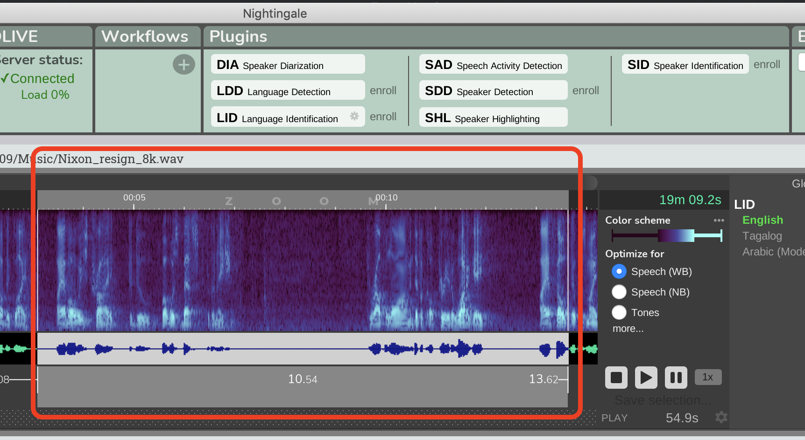
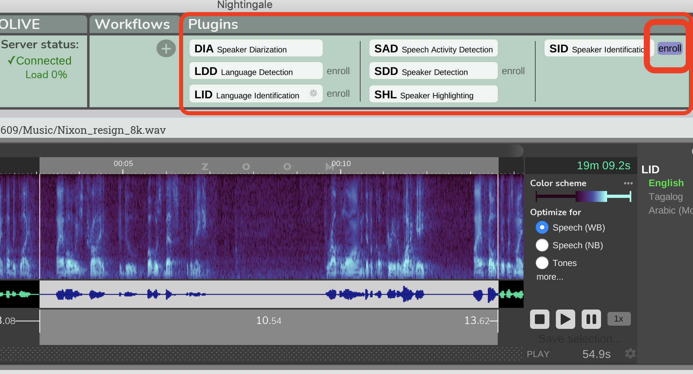
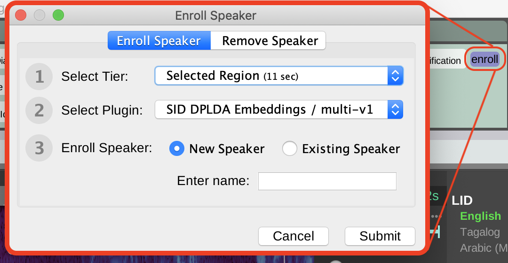
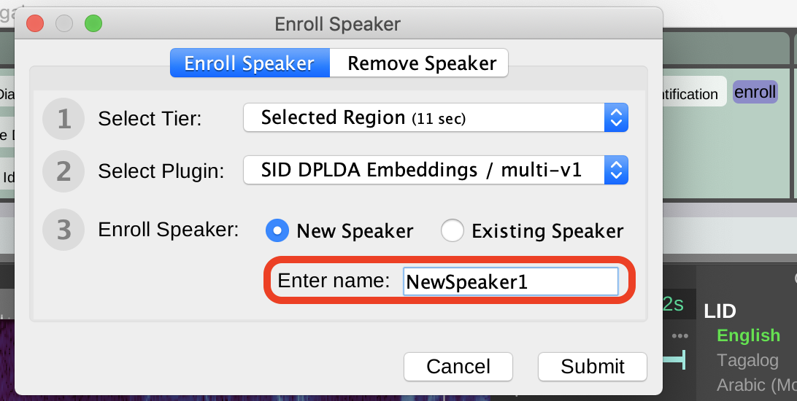
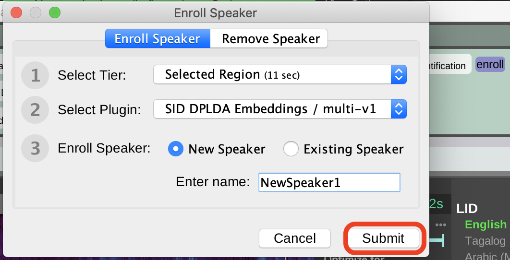
Augmentation
Augmentation is almost the exact same process as enrollment, but in augmentation instead of creating a new class (eg. speaker, keyword, etc) you'll be adding additional data to an existing class. This is useful for improving models, especially when the amount of audio, or the quality of audio for the initial enrollment is low. To augment a model simple follow the same steps for enrollment, but instead of giving the enrollment a name in Step 3, select an existing class from the following dropdown:
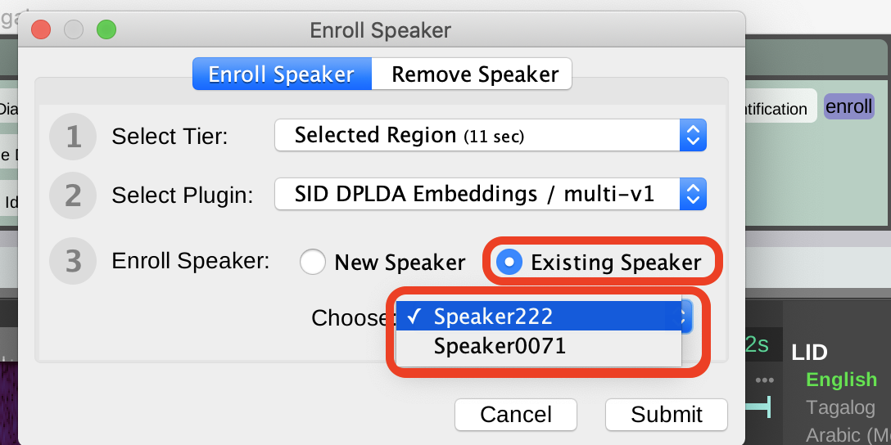
Removing an Enrollment
Removing an enrollment can be useful to remove clutter if you no longer need a class or classes. Removing an enrolled class removes the entirety of the class, if you had augmented the class with several audio clips, unenrolling will remove everything. There is no way through the Nightingale GUI to remove individual augmentation segments from an enrollment. To remove a class from a plugin follow the steps below:
- Select the 'Enroll' button to the right of the plugin you want to remove an enrolled model from.
- Select 'Remove ______'.
- Select which class you want to remove from the dropdown list.
- Click 'Submit'
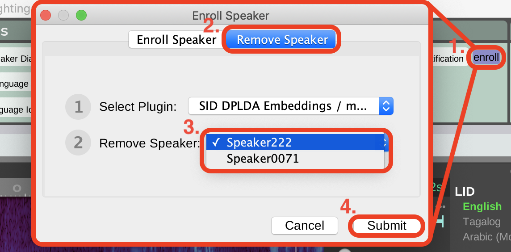
Analysis
Analysis is the basic operation of most plugins, and mostly falls under 3 general types of scoring; Global Scoring and Region Scoring. Region scorers return score results for one or more classes, and associate them with a specific region (or regions) in time, whereas global scorers return a single score for each class for the entire portion of the audio that was submitted. Some examples of global scorers and region scorers are below; typically "Identification" plugins are global scorers, and "Detection" plugins are region scorers.
- Global Scorers:
- Speaker Identification (SID)
- Language Identification (LID)
- Gender Identification
- etc.
- Region Scorers:
- Language Detection (LDD)
- Speaker Detection (SDD)
- Query by Example Keyword Spotting (QBE)
- Acoustic Event Detection (AED)
- Automatic Speech Recognition (ASR)
- etc.
The procedure for scoring audio is largely the same for both types of plugins, and entails following these steps: First select audio (if you are analyzing a specific region, otherwise just make sure the appropriate file is selected), then do the following steps to run analysis on that audio:
- Select plugin type from panel (eg. SID, LID, etc)
- Select from 'Entire File', 'Selection', and 'Tier' (If you are analyzing a specific Tier, you will also need to make sure the correct tier is selected from the dropdown)
- If you have multiple versions or domains of the plugin you will need to specify which version of the plugin to use from the '___ Plugin:' dropdown menu.
- Click 'Submit'
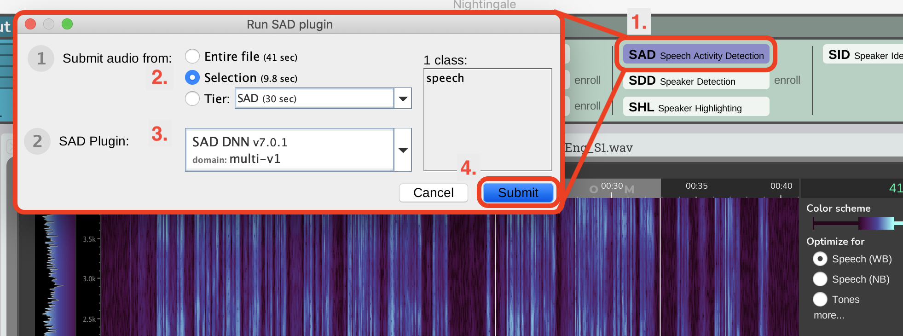
Viewing Results
Global Scoring
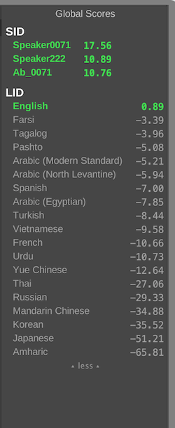
After you've performed analysis with a global scoring plugin the results of the analysis will appear in the global scoring section in the top right of the Nightingale GUI. Depending on the plugin there will be a list of each of that plugins classes and a corresponding score displayed in this area. Scores that are above 0 are considered a detection and will be shown at the top of the list in large green text, scores that are below 0 are displayed below in grey text. The higher a positive score is the more confident the system is that that particular class was detected in the audio that was submitted, whereas conversely, the lower the score below zero the more confident the system is that that class was NOT detected in the submitted audio. Some plugins that have many classes enrolled will not be able to display all of the scores in the global score results region, instead they will display the top X number of results and will also display a small button that says "more" at the bottom of the list. Clicking "more" will display the rest of the class scores for that analysis.
Global scoring results appear on the right side of the GUI in panel "11." on the Nightingale Overview
Region Scoring
After you've performed analysis with a region scoring plugin the results will be displayed as a new tier beneath the audio file that was analyzed. If there were detections in the analysis regions with the name of the class that was detected will be displayed in this tier. Region Scoring results will populate below the file that they were run on in panel "12." in the Nightingale Overview
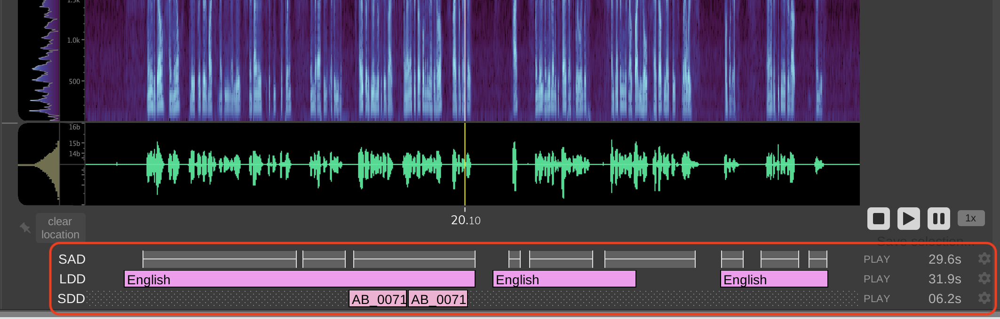
Areas in the region score tiers that are marked by a dot/hash pattern indicate that these areas were not included in the region scoring submission. This happens when only a selection or tier is submitted for analysis instead of the entire file.
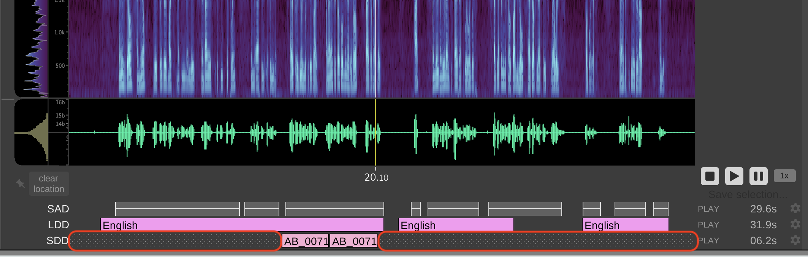
Workflows
Workflows are prebuilt complex tasks that run a segment of audio through a predefined series of HLT algorithms. This can be very useful and timesaving when there is a well-defined use case or mission that requires the same tasks or procedure to be run on all audio. If you have been provided with one or multiple .workflow files you can load them into the Nightingale GUI by following the steps below:
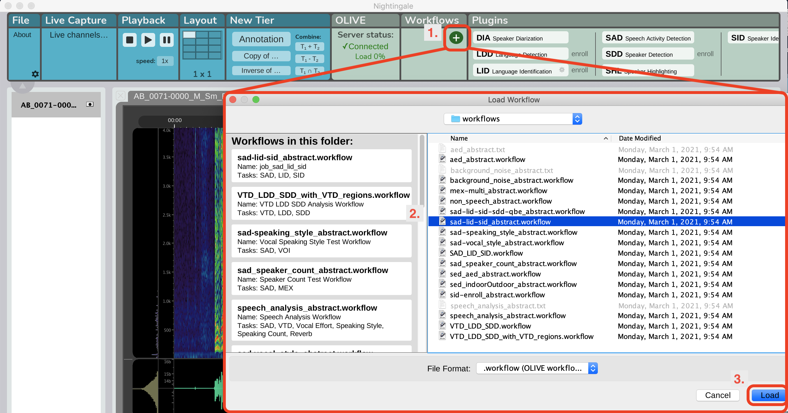
Once you've successfully loaded one or multiple workflows into the GUI you will see them appear as new buttons in the workflow panel. You can submit audio to a workflow in the same way as submitting audio for analysis, by highlighting a selection/tier/file and clicking the appropriate workflow button as shown below:
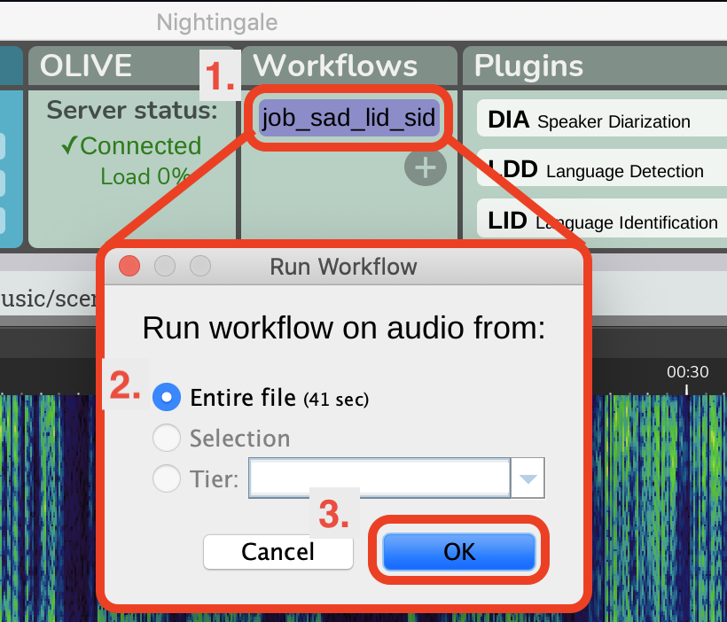
Depending on how each workflow is configured and which plugins it consists of, the results will be displayed around the waveform as they are returned, and will be displayed either on the Region Scoring Results area below the waveform, or the Global Scoring Results area to the right of the waveform, as is appropriate for each plugin the workflow is running.
Nightingale Basic Tools
In addition to HLT capabilities Nightingale includes several built-in tools to help users navigate and manipulate audio files for analysis and submission to algorithms. Below are the descriptions of these basic tools and how to use them.
Audio Playback Controls
Nightingale has two 'Playback Control Panels' that can be used to play, stop, pause, or speed up audio. These panels will play the audio in the active panel, and will default to playing from the start of the active file if no audio is selected, otherwise they will cause playback to start at the beginning of the selected audio. The playback panels are the panels marked "2." in the Nightingale Overview
Layout Panel
The layout panel, "3." on the Nightingale Overviewcan be used to customize the number and layout of different channels the user would like to display for simultaneous viewing. This can be a usefull tool to scale Nightingale to the needs of the user. Typically a user focused on close analysis of a audio files might want to use 1-3 panels to display different files, a user focusing on monitoring many live audio streams may wish to use this panel to configure Nightingale to display up to 12 simultaneous audio files or streams.
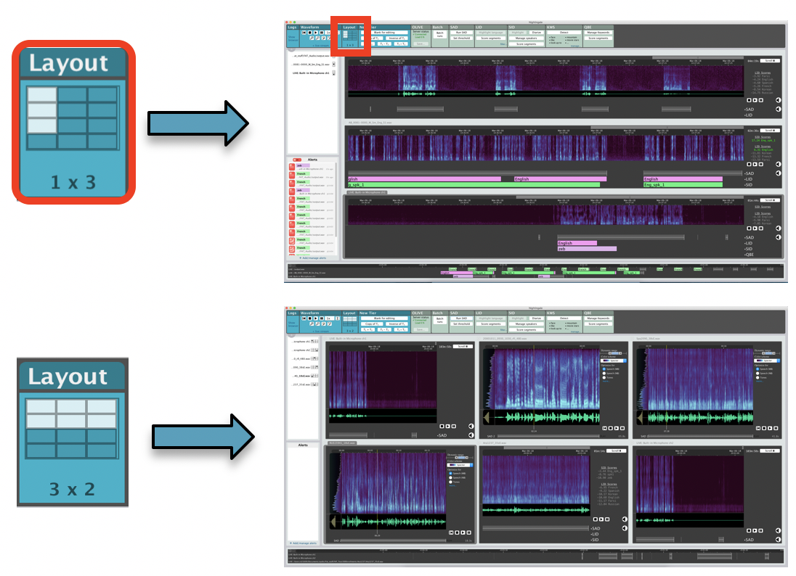
Tier Manipulation and Annotation
The 'New Tier' panel marked "4." in the Nightingale Overview allows users to create their own tiers. Additionally it allows for the creation of creating inverse tiers, and creating new tiers from the difference and sum of multiple existing tiers. This is a tool that can be used by advanced users to fine tune the portions of audio that they wish to run tasks on. The 'New Tier' panel also allows users to create an annotation tier, in which they can add comments and notes at different timestamps in the audio.
Channel/File List
The file list on the left side of the Nightingale GUI marked "8." in the Nightingale Overview can be used to switch between any files (or channels if you are livestreaming) that have been loaded into Nightingale. If there are more files/streams loaded then there are Layout Panels allocated, then you can allocate one of the undisplayed files to one of the layout panels by hovering over it in the Channel/File list, and then clicking the panel on the grid where you would like the file to be displayed.
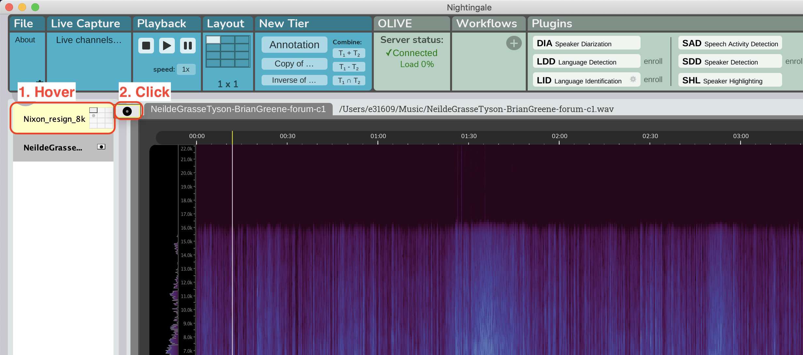
Spectogram
Nightingale's spectogram, displayed in panel "9." and controlled from panel "10." in the Nightingale Overview can be a powerful tool to analyze audio and pick out signal from the background noise. The spectogram in panel 9. is the main interface panel for users, and is where the majority of audio selection can be done. The spectogram control panel in panel 10. allows the user to customize the color schemes, sensitivity, and a host of more advance settings that can be accessed on panel 10. by selecting the "more..." button.
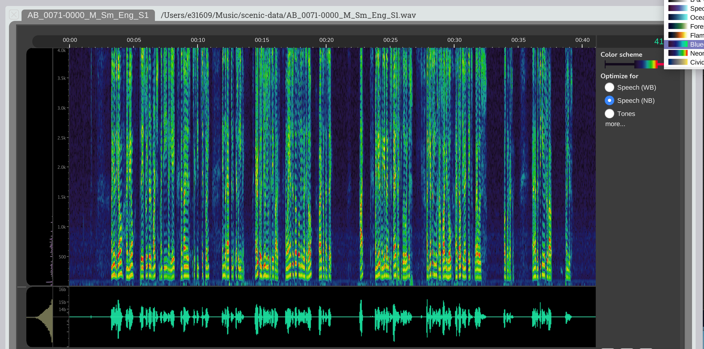
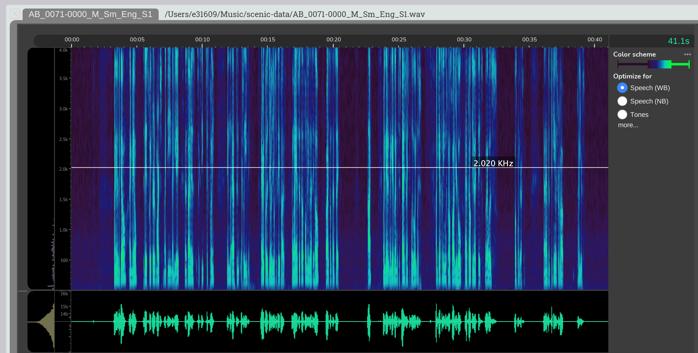
Changes made here are temporary and will be reset when the GUI is closed.